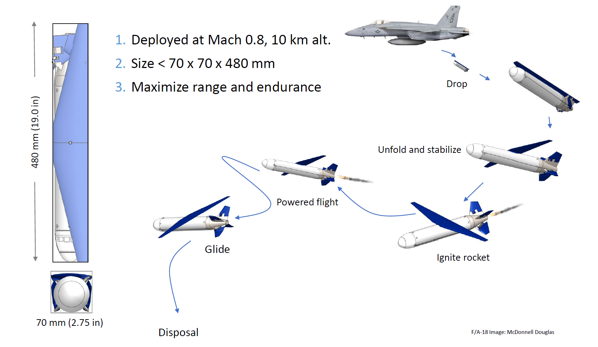
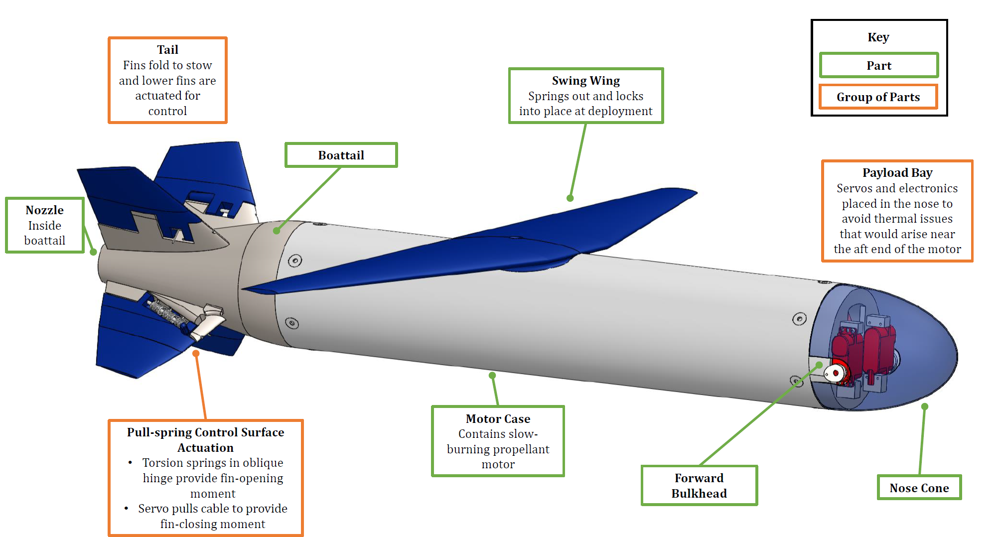
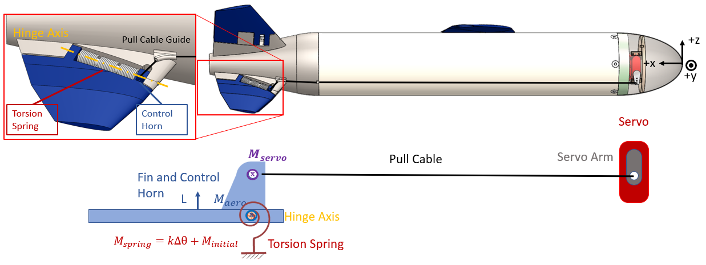
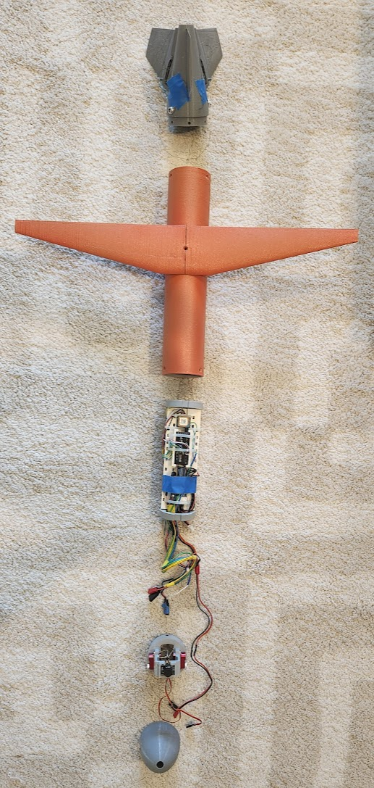
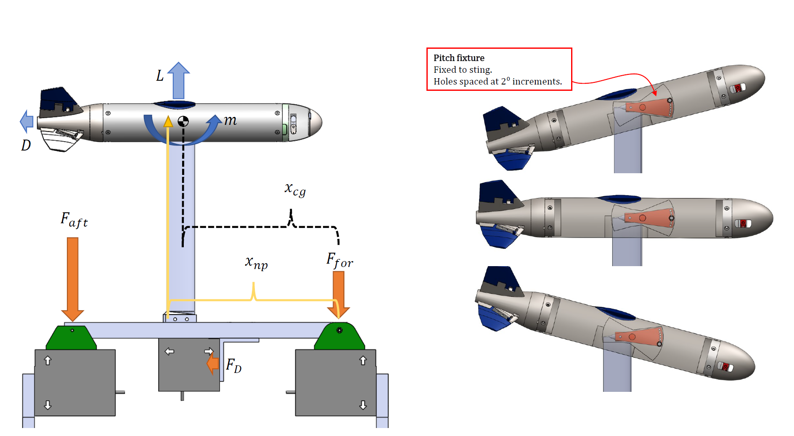
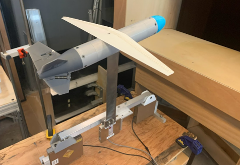
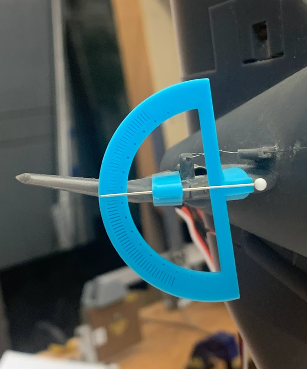
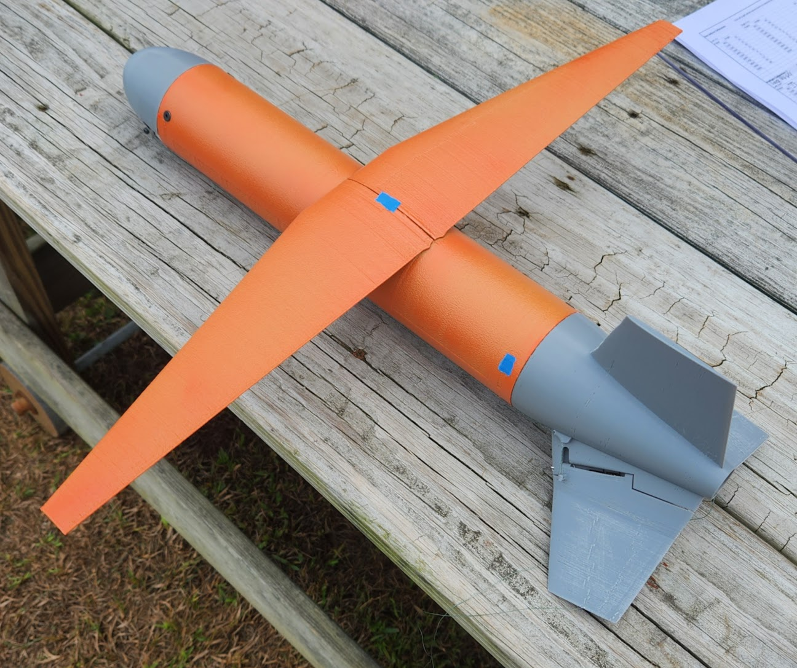

Firefly: Deployable-Tail Micro-UAV
UAV Design
Wind Tunnel Testing
Flight Testing
Hardware Prototyping
Design and development of pull-spring-actuated folding-tail stability and control systems for a rocket-powered micro-UAV.
Overview
As part of my S.M. research at the MIT International Center for Air Transportation, I led the design and development of the stability and control system for Firefly—a deployable micro-UAV powered by a slow-burning solid rocket motor.
The challenge involved engineering a reliable tail deployment mechanism that could transition seamlessly from a compact stowed configuration to a stable flying wing/tail architecture under changing vehicle static margin as the solid-rocket motor burned.

Key Contributions & Technical Highlights
- Folding-Tail Mechanism: Designed a pull-spring-actuated folding tail utilizing an oblique hinge that serves as both the physical deployment axis and the aerodynamic actuation axis.
- Rapid Prototyping: Iterated rapidly through multiple 3D-printable vehicle iterations to test hinge mechanics, deployment reliability, and structural integrity.
- Wind-Tunnel Testing: Built a custom pitch-balance test setup to experimentally evaluate longitudinal stability and controllability across various angles of attack.
- Flight Testing: Conducted unpowered drop tests deployed from a quadcopter to collect stability and controllability data under glide conditions.
- Validation: Correlated experimental wind-tunnel and drop-test data against analytical predictions generated via AVL (Athena Vortex Lattice).
Media & Gallery
System Overview

Prototyping & CAD


Wind Tunnel Setup



Glide Testing
